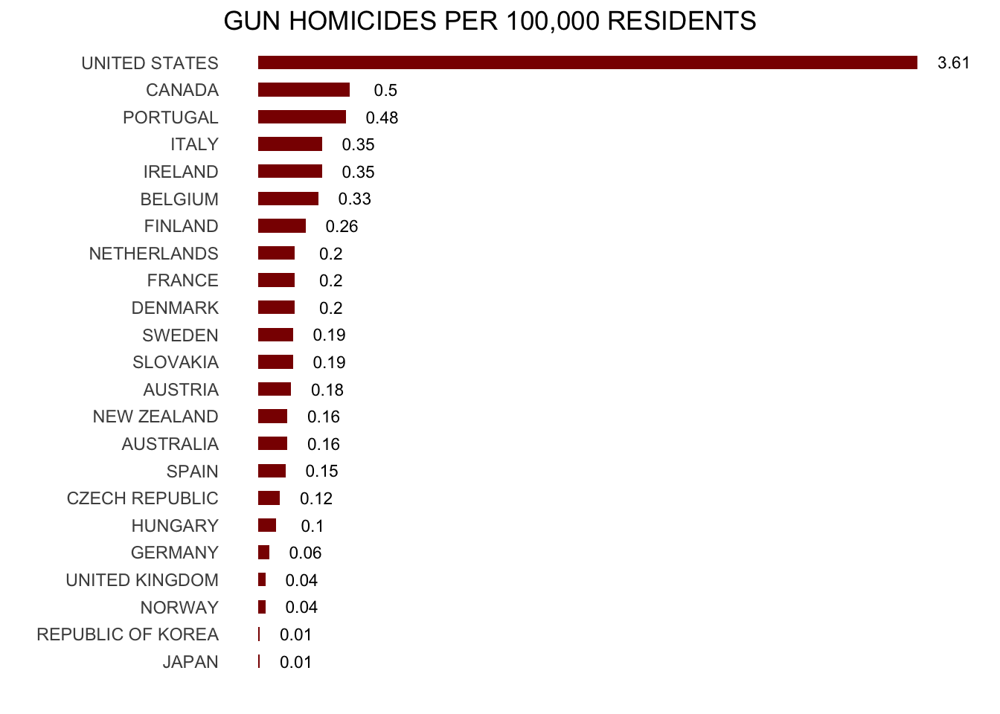

Welcome To Data Analytics
Readings
Your readings will be assigned each week in this area. For this initial week, please read the course content for this week. Read closely the following:
- The syllabus, content, and lab assignment pages for this class.
- This page. Yes, the whole thing.
Guiding Question
For future lectures, the guiding questions will be more pointed and at a higher level to help steer your thinking. Here, we want to ensure you remember some basics and accordingly the questions are straightforward.
- How does this course work?
- Do you remember anything about
R? - Do you have a working
Rinstallation on your computer, along with Rstudio andtinytex?
Before we get started….
New phone who dis?
For one participation point, please email me jkirk@msu.edu with the subject [EC242] Who Dis. In the message, tell me:
Name (with pronunciation guide)
Major
Desired graduation year and semester
Interest in this course on a 10-point scale (1: not at all interested; 10: helllllll yeah)
Biggest social question (e.g. “What drives food deserts?”)
This will count for one of your participation points.
Please please please please please ask questions during class.
Most ideas will be new.
Sometimes (often?) the material itself will be confusing or interesting—or both!
Note: If I find that attendance is terrible, I may have to start incorporating attendance into participation.
I encourage measured feedback and thoughtful responses to questions. If I call on you and you don’t know immediately, don’t freak out. If you don’t know, it’s totally okay to say you don’t know.
Things To Remember (tl;dr)
Do your weekly writing due Saturday. Begin working on Lab 1 as it is due Monday Tuesday (as the syllabus states, if Monday is a holiday, it is due the next non-holiday date: Tuesday September 3rd. The regular date will always be Monday).
Keys from the syllabus:
- E-mail isn’t the ideal solution for technical problems
- If you do send an email, please start it with
[EC242]and the subject.
- If you do send an email, please start it with
- No appointments necessary for regularly scheduled office hours; or by appointment and via Slack
- TA office hours are great as well. Our TA has experience in this course.
- Notify me immediately if you need accommodations because of RCPD or religious convictions; If you approach me at the last minute, I may not be able to help.
Despite my hard-assness in these introductory notes: I’m here to help and I am not in the business of giving bad grades for no reason.
One quick plug:
For econ majors or people interested in quantitative social sciences in general (which is this whole class):
What is “Data Analytics”?
I keep saying that the sexy job in the next 10 years will be statisticians. People think I’m joking, but who would’ve guessed that computer engineers would’ve been the sexy job of the 1990s?
…
The ability to take data – to be able to understand it, to process it, to extract value from it, to visualize it, to communicate it’s going to be a hugely important skill in the next decades
In my opinion, then, Data Analytics is the process of extracting value from data. Statistics provides the framework for making statements in the face of uncertainty.
Data Analytics, then, involves:
- Insight learned from data
- Communicated in a useful way
- With some notion of precision
Learning from Data
The following are the basic requirements for statistical learning:
- A pattern exists.
- This pattern is not easily expressed in a closed mathematical form.
- You have data.
Some “data analytics” topics we will cover:
- Linear regression: il classico.
- LASSO
- Models of classification or discrete choice.
- Analysis of ``wide’’ data.
- Decision trees and other non-linear models.
- Visualization (both analytics and communication)
Starting point for this course
Better utilizing existing data can improve our predictive power whilst providing interpretable outputs for considering new policies.
WARNING: Causation is tough and we will spend the entire course warning you to avoid making causal claims!
The Pros and Cons of Correlation
The product of analysis often takes the form of a documented correlation. Our prison example showed us a correlation. This has some pros and cons.
Pros:
- Nature gives you correlations for free.
- In principle, everyone can agree on the facts.
Cons:
- Correlations are not very helpful.
- They show what has happened, but not why.
- For many things, we care about why. The social science perspective asks “why?”
Why a Correlation Exists Between X and Y
\(X \rightarrow Y\) X causes Y (causality)
\(X \leftarrow Y\) Y causes X (reverse causality)
\(Z \rightarrow X\); \(Z \rightarrow Y\) Z causes X and Y (common cause)
\(X \rightarrow Y\); \(Y \rightarrow X\) X causes Y and Y causes X (simultaneous equations)
A Paradigm to Motivate Prediction
Example: a firm wishes to predict user behavior based on previous purchases or interactions.
Small margins \(\rightarrow\) huge payoffs when scaled up.
\(.01\% \rightarrow\) $10 million.
Not obvious why this was true for Netflix; quite obvious why this is true in financial markets.
From a computer science perspective, it only matters that you get that improvement ($$). From a social science perspective, we would want to use the predictions to learn more about why.
More Recent Examples of Prediction
- Identify the risk factors for prostate cancer.
- Classify a tissue sample into one of several cancer classes, based on a gene expression profile.
- Classify a recorded phoneme based on a log-periodogram.
- Predict whether someone will have a heart attack on the basis of demographic, diet and clinical measurements.
- Customize an email spam detection system.
- Identify a hand-drawn object.
- Determine which oscillations of stellar luminosity are likely due to exoplanets.
- Identify food combinations that cause spikes in blood glucose level for an individual.
- Establish the relationship between salary and demographic variables in population survey data.
An Aside: Nomenclature
Machine learning arose as a subfield of Artificial Intelligence.
Statistical learning arose as a subfield of Statistics.
There is much overlap; however, a few points of distinction:
Machine learning has a greater emphasis on large scale applications and prediction accuracy.
Statistical learning emphasizes models and their interpretability, and precision and uncertainty.
- But the distinction has become more and more blurred, and there is a great deal of “cross-fertilization”.
Obviously true: machine learning has the upper hand in marketing.
Case study 1: Global Renewable Energy Production
Imagine you are evaluating countries for a potential investment in renewable energy. Headlines like “Renewable Energy Capacity Growth Worldwide” have piqued your interest. Reports from various sources show diverse graphs and charts and you’re curious about the underlying data. You want to know which countries are leading the way in renewable energy production and which are lagging behind. You want to know which countries are growing their renewable energy production the fastest. In short: you want to know which countries are the best bets for investment. You might see something like the following:

You might want to look into the underlying data (in this case, fabricated) and think about what to do next. In this sense, you have learned from data. The data provides directions for exploration and clues as to potential explanations.
Case study 2: US homicides by firearm
Imagine you live in Europe (if only!) and are offered a job in a US company with many locations in every state. It is a great job, but headlines such as US Gun Homicide Rate Higher Than Other Developed Countries1 have you worried. Fox News runs a scary looking graphic, and charts like the one below only add to you anxiety:
Or even worse, this version from everytown.org:

But then you remember that (1) this is a hypothetical exercise; (2) you’ll take literally any job at this point; and (3) Geographic diversity matters – the United States is a large and diverse country with 50 very different states (plus the District of Columbia and some lovely territories).2

California, for example, has a larger population than Canada, and 20 US states have populations larger than that of Norway. In some respects, the variability across states in the US is akin to the variability across countries in Europe. Furthermore, although not included in the charts above, the murder rates in Lithuania, Ukraine, and Russia are higher than 4 per 100,000. So perhaps the news reports that worried you are too superficial.
This is a relatively simple and straightforward problem in social science: you have options of where to live, and want to determine the safety of the various states. Your “research” is clearly policy-relevant: you will eventually have to live somewhere. In this course, we will begin to tackle the problem by examining data related to gun homicides in the US during 2010 using R as a motivating example along the way.
Before we get started with our example, we need to cover logistics as well as some of the very basic building blocks that are required to gain more advanced R skills. Ideally, this is a refresher. However, we are aware that your preparation in previously courses varies greatly from student to student. Moreover, we want you to be aware that the usefulness of some of these early building blocks may not be immediately obvious. Later in the class you will appreciate having these skills. Mastery will be rewarded both in this class and (of course) in life.
The Pre-Basics
We’ve now covered a short bit of material. The remainder of this first lecture will be covering setting up R and describing some common errors. For this, we’ll head over to resources to install R, RStudio, and tinytex.
If you leave class without a working installation of these pieces of software, then you are likely to run into trouble in completing your first assignments.
Social Science Approaches to Statistical Learning
Suppose you are a researcher and you want to know whether prisons reduce crime.
from “A Call for a Moratorium on Prison Building” (1976)
So what does the “Social Science” in “Social Science Data Analytics” do? - People do not obey the laws of physics - People’s preferences and feelings do not obey a strict logic - You may prefer a burger for dinner today, but you might want spaghetti tomorrow - People interact with people to form outcomes we care about - Demand, supply, and price - Thus EC242 - But also, forming institutions (PoliSci), social movements and norms (sociology), spatial patterns (hello, Geo folks), interactions with natural resources (coupled human-natural systems), etc.
In a way, Social Science Data Analytics is a lot messier, complicated, and rewarding relative to just “data analytics”.